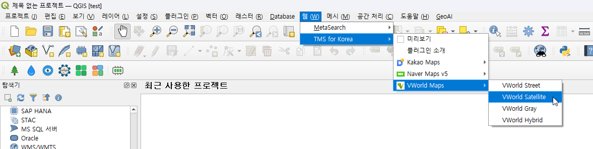
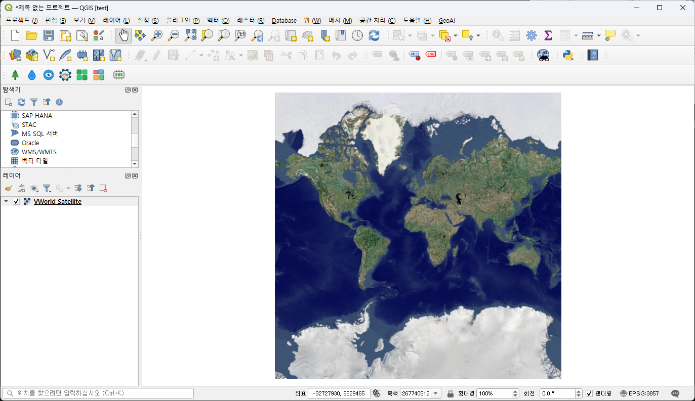
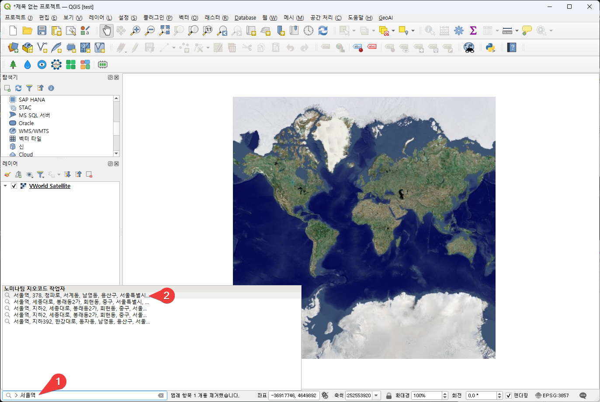
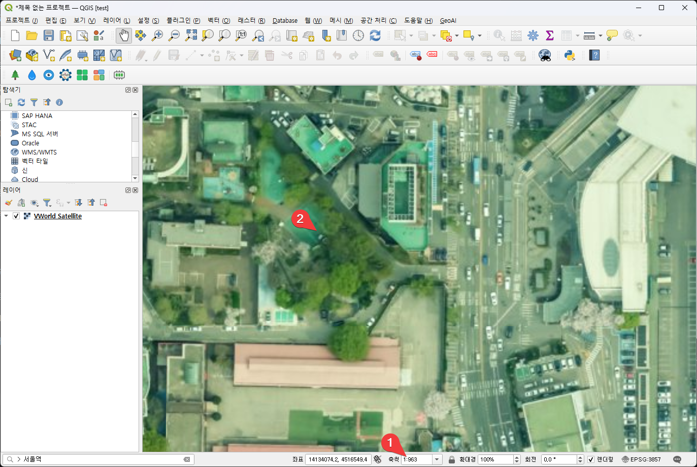
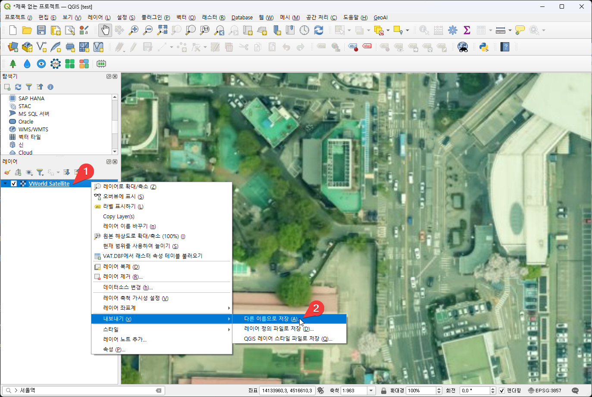
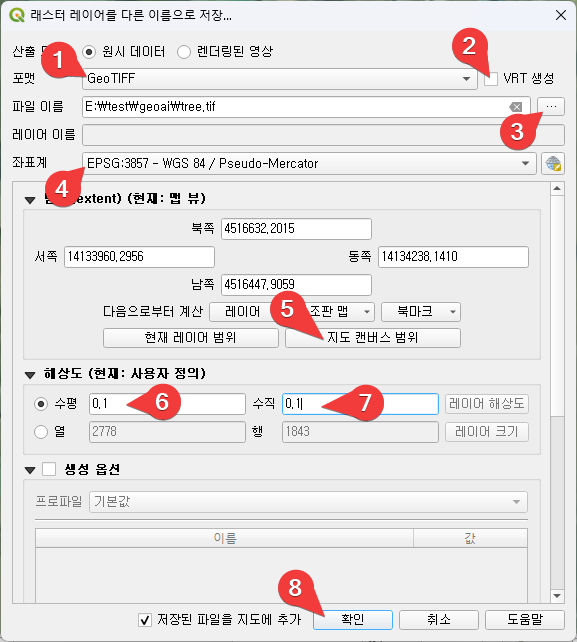
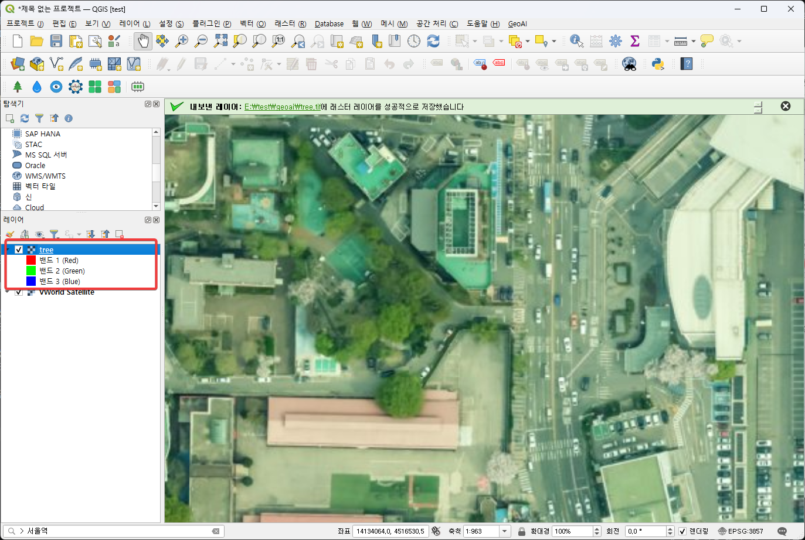

QGIS 맵을 geoTiff 형식으로 내보내 AI 테스트용 이미지 생성
VWorld 위성 지도 추가

이 방식은 테스트용으로만 사용해야 하며, 실제 상업용으로 사용할 떄는 지도 제공 업체와 라이선스를 별도 확인해야 합니다.
TMS for Korea 플러그인을 설치하면 메뉴에 "웹" 메뉴가 추가된다. 위와 같이 "VWorld Satellite" 메뉴를 선택한다.

VWorld 위성 사진 레이어가 추가되어 나타난다.
서울역 주변으로 이동

-
QGIS 맨 왼쪽 아래의 검색창에서 "> 서울역"으로 검색한다.
-
5개가 검색되어 나오는데, 그 중 가장 위 "서울역, 378, 청파로, ..." 를 더블 클릭한다.

-
마우스 휠을 위로 올려 축척이 대략 "1:963" 정도 되도록 확대하고
-
지도를 마우스 가운데 휠로 누르고 약간 움직여 위와 같은 부분에 위치하도록 한다.
지도에 표시된 지역을 geoTiff로 저장하기

-
VWorld Satellite 레이어를 오른쪽 클릭하고,
-
내보내기, "다른 이름으로 저장"을 선택한다.

-
포맷을 "GeoTiff"로 선택한다.
-
"VRT 생성" 옵션을 끈다.(체크 표시를 지운다)
-
"... 버튼"을 눌러 파일 이름을 설정한다. 이 경우 "E:\test\geoai\tree.tif"로 설정했다.
-
좌표계는 지도에 맞게 설정한다.
-
"현재 보여지는 지도의 영역만 사용하기 위해 "지도 캔버스 범위" 버튼을 눌러준다.
-
해상도의 수평을 "0.1", 수직을 "0.1"로 설정한다. 이 값을 바꿀 때마다 바로 아래의 열 행이 바뀌는데 열이 대략 3000 정도가 되도록 하면 일반적인 컴퓨터에서도 아주 큰 무리는 없이 AI 수행을 할 수 있다.
-
해상도의 수평을 "0.1", 수직을 "0.1"로 설정한다. 이 값을 바꿀 때마다 바로 아래의 열 행이 바뀌는데 열이 대략 3000 정도가 되도록 하면 일반적인 컴퓨터에서도 아주 큰 무리는 없이 AI 수행을 할 수 있다.
-
확인 버튼을 누른다.

방금 내보낸 파일이 QGIS에 추가되고, geoTiff의 특성 상 그 지도의 해당 위치에 정확하게 붙는다.